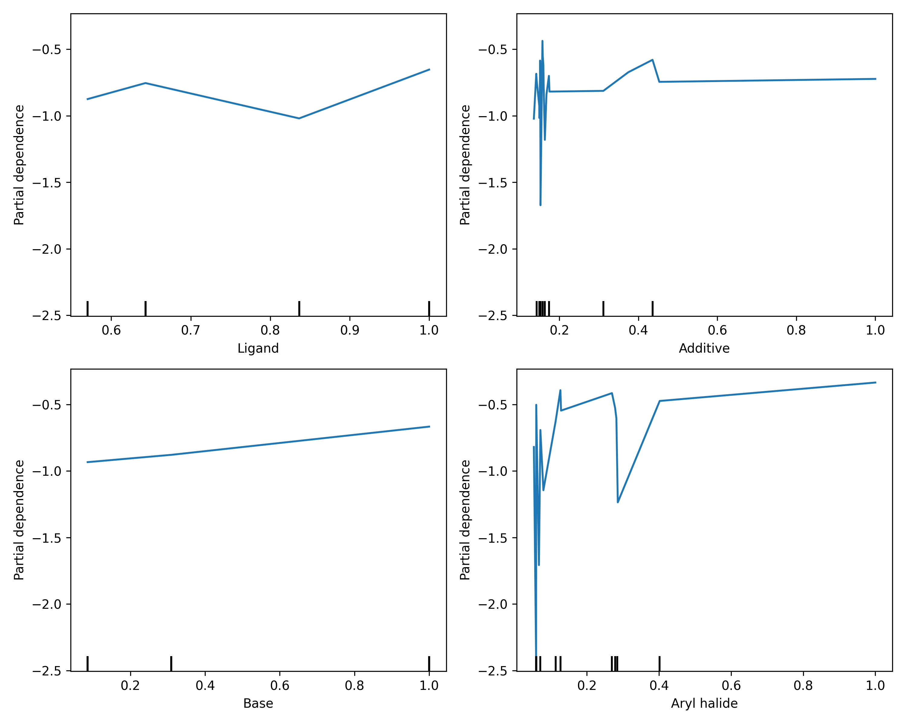
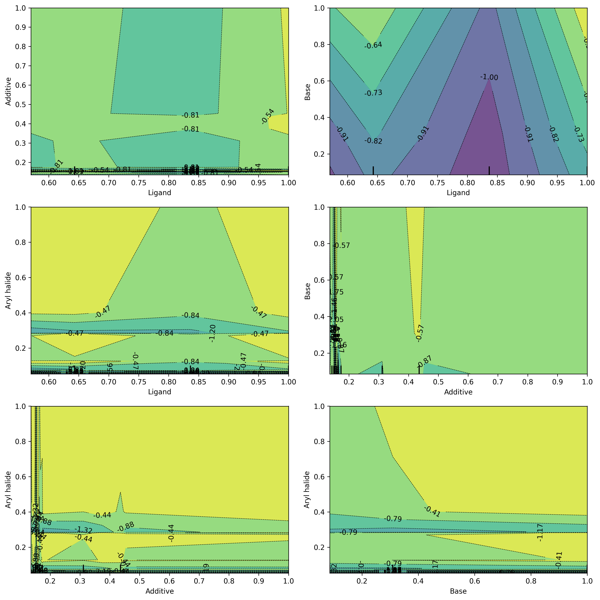
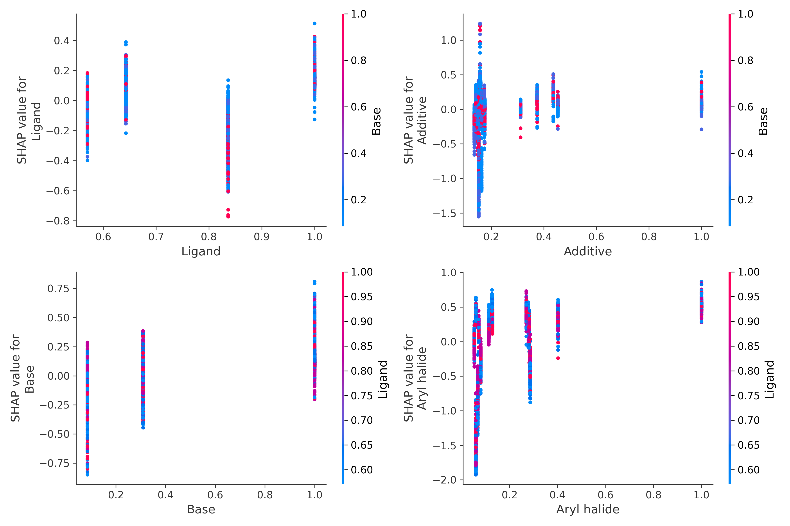

This plot shows how the feature affects the model's prediction on average, keeping all other features constant.
This grid shows how pairs of features interact to influence the model's predictions. Look for curved surfaces or ridges to spot nonlinear effects and dependencies.

1. Y-axis: Feature Names
Ranked by importance (top = most influential).
Importance is based on the average absolute SHAP value = how much each feature contributes to predictions overall.
2. X-axis: SHAP Value
Represents the impact of the feature on the model’s output.
Positive SHAP value -> pushes prediction higher.
Negative SHAP value -> pushes prediction lower.
3. Color: Feature Value
Each dot is a sample.
Color shows the actual value of the feature for that sample:
Red = high feature value
Blue = low feature value
This SHAP dependence plot shows how the value of a feature impacts the prediction for each sample. Color indicates the value of interacting features, revealing potential nonlinear or interaction effects.
